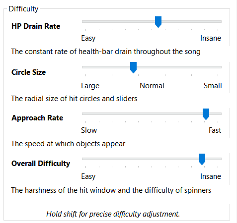

Song Setup and Metadata
This is the first thing you see when you begin mapping (besides dragging and dropping your song file into osu! of course). In the first tab, you will see metadata. Here, you input song information like title, artist name, and difficulty name (i.e. Easy, Normal, Hard, Insane, Expert etc.). The Audio, Colours, Design, and Advanced tabs aren't that important for now.
Difficulty Tab
In this tab, you can change different properties that affect the difficulty of a map. HP Drain Rate (HP) represents how much a player's health drops per missed note. Circle Size (CS) indicates how big or small the circles are in a map. 2 being the biggest and 7 being the smallest. Approach Rate (AR) represents how fast the circles come up on screen. Overall Difficulty (OD) changes the window of accuracy for a player. The higher the OD, the harder it is to hit a full 300 score on a note.
Timing
This is the main timing menu. Here you can set the song's bpm, which is how fast the song goes. Offset refers to the first beat of the song's metronome. Slider velocity is a measure of how fast the slider ball moves. For now, I recommend not messing with slider tick rate and just leaving it at 1. When you open the Timing Setup Panel, you can add more timing points, change hitsound volume, and add slider velocity multipliers if you want to speed up or slow down sliders.
On the big timeline at the bottom, you can see all your different timing points and bookmarks. Mappers usually refer to all of these collectively as "lines." Red lines represent parent timing points. Most songs usually only have one as not a lot of songs have tempo changes or offbeat notes. Green lines are inherited timing points. They modify the slider velocity and hitsound volume of parent timing points. Yellow lines are a combination of both in one point in the timeline, and Blue lines are bookmarks which are used for organization purposes.
Compose
This is the part where you actually start mapping. The compose tab allows you to place three different types of hitobjects: circles, sliders, and spinners.
Circles are the easiest to understand. You simply place them and they can be clicked exactly once. Sliders are a bit more complicated. Firstly, they are made of 3 segments: The slider head, slider body, and slider tail. You can change the shape of a slider with the use of anchors. Gray anchors add curves while Red anchors add ridges and corners. Lastly, spinners are pretty straightforward. You can set them to last a set amount of time through dragging in the timeline.